Vehicle Systems & Components — Lecture 1
One car, three fidelity levels, ten notebooks.
S speaker view · C cue panel · O overview · ← → sections · ↑ ↓ within a section
| # | Title | The point of it |
|---|---|---|
| 01 | The car | transient vs steady state; read K, τ and θ off a step |
| 02 | Open vs closed loop | feedforward is right until the hill |
| 03 | P | error shrinks with k but never reaches zero |
| 04 | PI | the integrator finds notebook 02's answer by itself |
| 05 | PID | three terms, three jobs: present, past, future |
| 06 | Windup | the hill the engine cannot climb |
| 07 | Derivative and noise | small noise, steep slope, ruined command |
| 08 | Tuning | a gain set from one step test, without a model |
| 09 | Discretization | the strobe light slows down |
| 10 | Wheel and slip | cruise control meets black ice |
Four areas, and a model in the middle of all of them — because you need one to design a controller, to estimate a state, to plan a path, and to check that any of it worked.
Today: the model, and the feedback half of "control". Planning is a driver pressing a button, and estimation appears only as the noise in section 07.
Physical components. Lecture 2 uses these unchanged, which is the test for whether something belongs here.
IdealEngine.dyad delay, lag, torque limitDriveline.dyad gear, wheelVehicleBody.dyad mass, drag, rolling, gradeGradeForce.dyad the hill, as a forceConversions.dyad ToKmPerHour — the one conversionCarPlant.dyad all of the above, wired upGradeProfile.dyad flat → climb → flatControllers and scenario harnesses. A plant cannot run on its own: its
inputs would be unconnected, so every demo is a harness around CarPlant.
WideOpenThrottle.dyad → section 01CarStepTest.dyad → sections 01, 08CruiseLoop.dyad → sections 02–06, 08, 09WideOpenThrottleTransient, CarStepTestTransient,
CruiseLoopTransient — the sources, the initial conditions and the run
window live in the model, so a notebook cell is a run and a plot.
| Parameter | ||
|---|---|---|
| mass m | 1400 | kg |
| drag area CdA | 0.63 | m² |
| air density ρ | 1.2 | kg/m³ |
| rolling coefficient fr | 0.012 | — |
| wheel radius r | 0.31 | m |
| gear ratio i | 4.0 | — |
| torque limit Tmax | 150 | N·m |
| manifold lag τe | 0.3 | s |
| transport delay θe | 0.3 | s |
Setpoint, measurement and error are all km/h. So every gain you see today has the same units and means the same thing:
k is in N·m per km/h.
"Five newton-metres for every km/h I am off." That is a sentence an engineer can sanity-check; k = 220 in mixed units is not.
The plant's internals are SI throughout. Exactly one conversion exists in the whole model, and it is a visible block on the sensor output:
Vehicle.ToKmPerHour
No notebook ever multiplies a plotted signal by 3.6. If a speed axis says km/h it is because the model emitted km/h.
Notebook 01
Before you can control something, you have to know what it does on its own.
notebooks/lecture01/01-the-car.ipynb
| u | commanded engine torque |
| d | road gradient, wind, payload |
| x | speed (and, later, wheel speed) |
| y | speed at the speedometer, km/h |
dyad/Vehicle/CarPlant.dyad
$$ m\,\frac{dv}{dt} \;=\; \underbrace{T\frac{i}{r}}_{\text{tractive}} \;-\; \underbrace{\tfrac{1}{2}\rho\,C_dA\,v^2}_{O_V\ \text{drag}} \;-\; \underbrace{f_r\,m\,g\cos\alpha}_{O_f\ \text{rolling}} \;-\; \underbrace{m\,g\sin\alpha}_{O_s\ \text{slope}} $$
Acceleration resistance Oz is the left-hand side: the mass itself. Auxiliary loads Oaux are not modeled here.
dyad/Vehicle/VehicleBody.dyad
c_drag = 0.5 * CAR.rho * CAR.CdA # N per (m/s)^2
F_roll = CAR.f_r * CAR.m * CAR.g # N, flat road
F_max = CAR.T_max * CAR.i / CAR.r # N, full torque through the driveline
v_terminal = sqrt((F_max - F_roll) / c_drag) # m/sdyad/Vehicle/IdealEngine.dyad
The red curve is the shape of a petrol engine, drawn to
make the comparison — not a measurement, and not this car. The blue line is exact: it
is what IdealEngine actually computes.
Scenarios = VehicleSystemsComponents.Lecture1
wot = Scenarios.WideOpenThrottleTransient()
plt = plot_speed(wot; sig = "plant.v_kmh", label = "speed",
title = "Full torque from rest, flat road")
hline!(plt, [v_terminal * 3.6]; ls = :dash, color = :grey,
label = "terminal speed, analytic")dyad/Lecture1/WideOpenThrottle.dyad
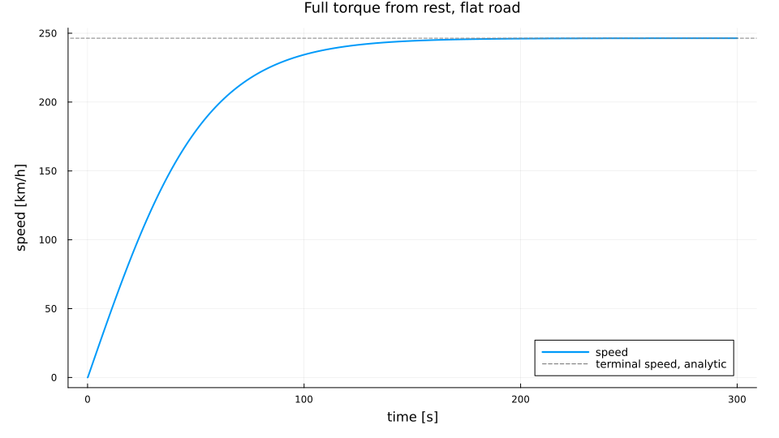
# the two cruise torques derived on paper, handed to the model
step_test = Scenarios.CarStepTestTransient(
tau_lo = T_90, tau_hi = T_110, v0 = 90 / 3.6, t_step = t_step)
plot_torque(step_test;
commanded = "cmd.y",
delivered = "plant.engine.limiter.y",
limit = nothing,
xlims = (t_step - 0.5, t_step + 3.0))dyad/Lecture1/CarStepTest.dyad
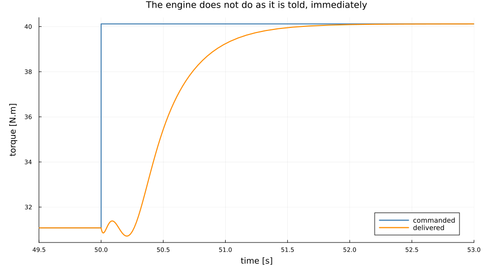
The temporary part. The system's reaction to an abrupt change, which dies out.
What is left after long enough that every startup effect has gone. The settled relationship between input and output.
The whole journey — their sum.
$$ y(t) \;=\; y_{\text{transient}}(t) \;+\; y_{\text{steady-state}}(t) $$
K, tau, theta = fopdt_fit(step_test;
output = "plant.v_kmh", A = T_110 - T_90, t0 = t_step)
# and, for comparison, the tangent gain and time constant at
# each end of the step, straight from the force balance
local_gain(v) = 3.6 / (2 * c_drag * v * CAR.r / CAR.i)
local_tau(v) = CAR.m / (2 * c_drag * v)K = 2.21 km/h per N·m · τ = 63.0 s · θ = 1.88 s
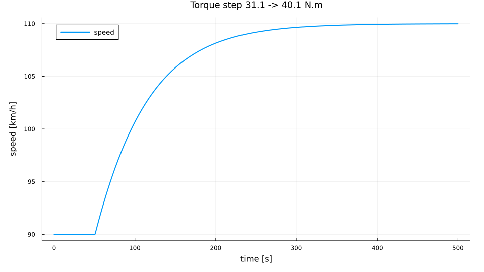
Next: we have a model of the car. Do we even need to measure it? → 02, open loop versus closed loop
Notebook 02
Feedforward is correct exactly as long as the world matches your model.
notebooks/lecture01/02-open-vs-closed-loop.ipynb
The reference is fed forward and never comes back. There is no error signal anywhere in this picture.
The output is compared with the reference, and the difference — the error — is what the controller acts on.
dyad/Lecture1/CruiseLoop.dyad
Scenarios = VehicleSystemsComponents.Lecture1
v = 90 / 3.6 # m/s
F = 0.5 * CAR.rho * CAR.CdA * v^2 + # drag
CAR.f_r * CAR.m * CAR.g # rolling
tau_ff = F * CAR.r / CAR.i # N.m at the engine
nominal = Scenarios.FeedforwardCruiseTransient(
tau_ff = tau_ff, stop = 1200.0)
plot_speed(nominal; setpoint = 90)WORLDS = [("flat road, nominal car", (grade = 0.0, m = CAR.m, CdA = CAR.CdA)),
("1% grade", (grade = 0.01, m = CAR.m, CdA = CAR.CdA)),
("200 kg payload", (grade = 0.0, m = CAR.m + 200, CdA = CAR.CdA)),
("20% more drag area", (grade = 0.0, m = CAR.m, CdA = 1.2 * CAR.CdA))]
open_loop = [name => Scenarios.FeedforwardCruiseTransient(
tau_ff = tau_ff, grade = w.grade, m = w.m, CdA = w.CdA,
stop = 1200.0)
for (name, w) in WORLDS]
plt = plot(; xlabel = "time [s]", ylabel = "speed [km/h]")
for (name, sol) in open_loop
plot!(plt, signal(sol, "plant.v_kmh")...; lw = 2, label = name)
end
hline!(plt, [90]; ls = :dash, color = :black, label = "target")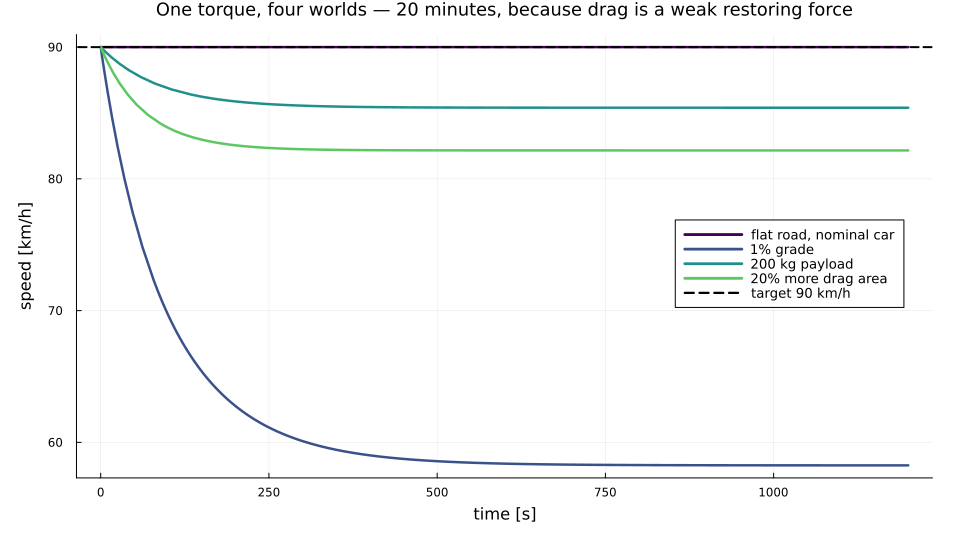
# the same four worlds, now with the loop closed
K = 25.0 # N.m per km/h
UNLIMITED = 1.0e6 # N.m — both torque ceilings lifted
closed = [name => Scenarios.CruiseLoopTransient(
k = K, v_lo = 90.0, v_hi = 90.0,
grade = w.grade, m = w.m, CdA = w.CdA,
T_max = UNLIMITED, y_max = UNLIMITED, stop = 60.0)
for (name, w) in WORLDS]
for (name, sol) in closed
plot!(plt, signal(sol, "loop.plant.v_kmh")...; lw = 2, label = name)
endAll three come back towards the target — without the controller being told which disturbance it is facing, or that there is one.
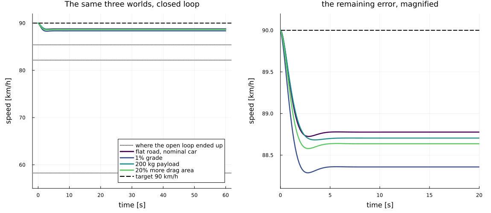
Feedforward changes how a system is operated.
Feedback changes what the system is.
The controller sets the rate of change as a function of the current state, and that relationship is new dynamics — dynamics the car did not have before you wired it up.
Next: the simplest thing that uses an error signal. → 03, proportional
Notebook 03
Proportional control gets you close, and close is where it stops.
notebooks/lecture01/03-proportional.ipynb
$$ u \;=\; k\,e \;=\; k\,\bigl(v_{\text{set}} - v\bigr) $$
Torque command proportional to how far off we are. That is all of it. No memory, no prediction.
Units, once and for all: e is km/h, u is N·m, so k is N·m per km/h.
T_max and y_max lifted). The limit returns in section 06.
dyad/Lecture1/CruiseLoop.dyad
Scenarios = VehicleSystemsComponents.Lecture1
SPEED = "loop.plant.v_kmh"
UNLIMITED = 1.0e6 # N.m, the ceiling lifted away
single = Scenarios.CruiseLoopTransient(
k = 14.0, T_max = UNLIMITED, y_max = UNLIMITED, stop = 30.0)
plt = plot_speed(single; sig = SPEED, setpoint = 110, label = "k = 14")
bracket_error!(plt, single; setpoint = 110, sig = SPEED)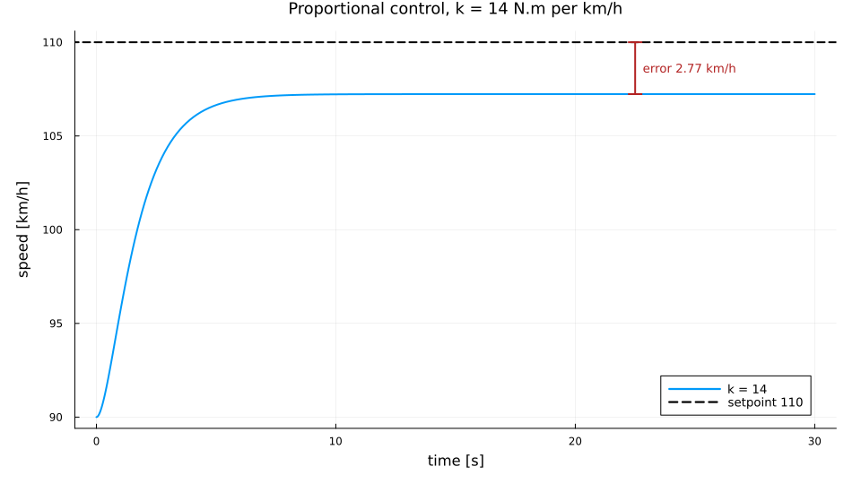
GAINS = [14.0, 56.0, 220.0, 890.0]
family = sweep(
Scenarios.CruiseLoopTransient(
k = 14.0, T_max = UNLIMITED, y_max = UNLIMITED, stop = 60.0),
"k", GAINS)
plot_sweep(family; sig = SPEED, setpoint = 110, name = "k")| k [N·m per km/h] | what it does |
|---|---|
| 14 | settles, 2.8 km/h short |
| 56 | settles, 0.7 km/h short |
| 220 | never settles — past Ku |
| 890 | never settles — past Ku |
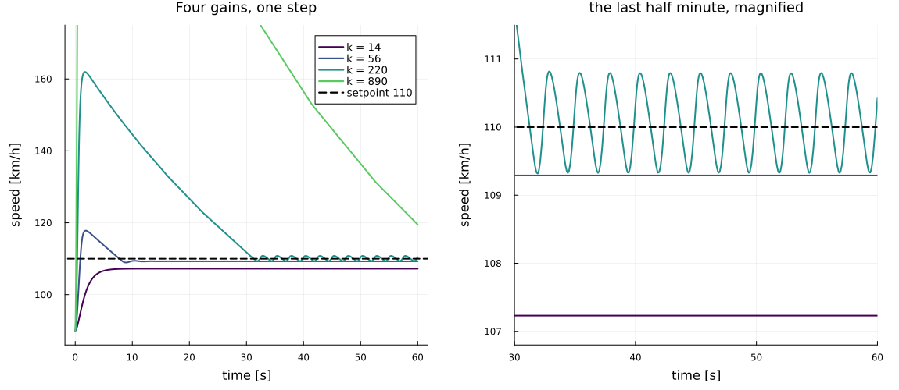
# solved from the force balance, not simulated: e = T(v_set - e)/k
function settled_error(k; v_set = 110.0)
e = 0.0
for _ in 1:20
e = cruise_torque(v_set - e) / k
end
return e
end
K_ULTIMATE = 115.0 # N.m per km/h
plot(ks, settled_error.(ks); xscale = :log10, lw = 2.5)
vline!([K_ULTIMATE]; ls = :dash, color = :firebrick, label = "Ku = 115")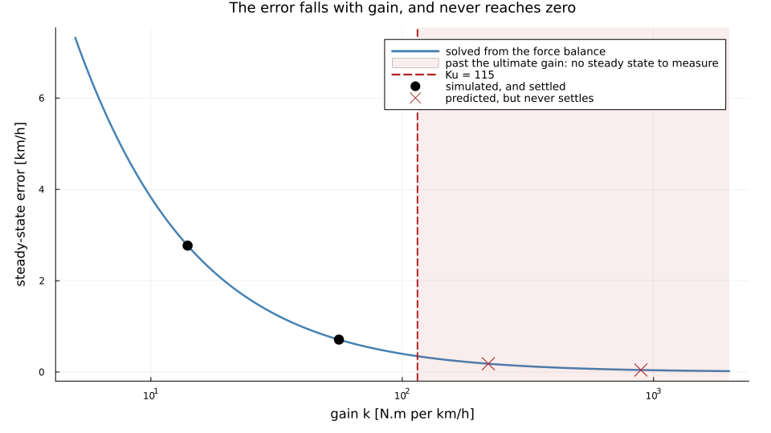
$$ u_{\text{needed}}(110) \;\approx\; 40\ \mathrm{N{\cdot}m} \qquad u = k\,e $$
$$ \Rightarrow\quad e_{\infty} \;=\; \frac{u_{\text{needed}}}{k} \;\neq\; 0 $$
Double the gain, halve the error. Never remove it.
The fix has to be something that remembers.
Next: give the controller a memory. → 04, proportional-integral
Notebook 04
The integrator works out the answer you would otherwise have to compute by hand.
notebooks/lecture01/04-proportional-integral.ipynb
$$ u \;=\; k\left(e \;+\; \frac{1}{T_i}\int_0^t e\,d\tau\right) $$
dyad/Lecture1/CruiseLoop.dyad
SPEED = "loop.plant.v_kmh"
GAIN, T_I, UNLIMITED = 56.0, 10.0, 1.0e6
p_only = Scenarios.CruiseLoopTransient(
k = GAIN, T_max = UNLIMITED, y_max = UNLIMITED, stop = 60.0)
pi_loop = Scenarios.CruiseLoopTransient(
model = Scenarios.CruiseLoopStep(; name = :CruiseLoopStep,
with_I = true, with_D = false),
k = GAIN, Ti = T_I, T_max = UNLIMITED, y_max = UNLIMITED, stop = 60.0)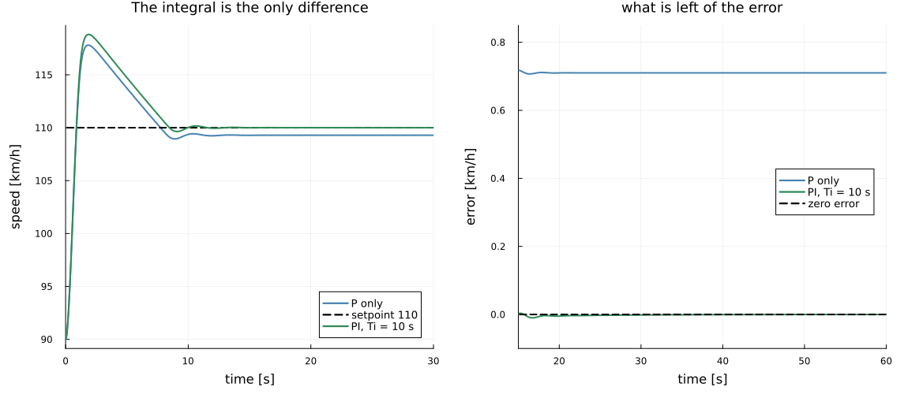
INTEGRAL = "loop.controller.integrator.y" # state, before the gain
t, integral = signal(settling, INTEGRAL)
torque = GAIN .* integral # k * I, in N.m
plot(t, torque; lw = 3, xlabel = "time [s]", ylabel = "torque [N.m]")
hline!([cruise_torque(110.0)]; ls = :dash, lw = 2, color = :black,
label = "torque to hold 110 km/h, from the force balance")dyad/Lecture1/CruiseLoop.dyad
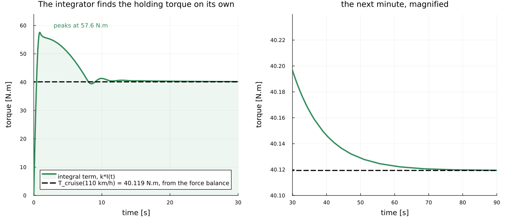
TIS = [40.0, 20.0, 10.0, 5.0, 2.5]
ti_family = sweep(pi_loop, "Ti", TIS)
plot_sweep(ti_family; sig = SPEED, setpoint = 110, name = "Ti",
xlims = (0, 20))
[overshoot(s, 110; sig = SPEED) for (_, s) in ti_family]Still an unlimited engine. Shrinking Ti integrates harder. Every one of these settles at 110 — the question is what it does on the way. The loop arrives sooner, then past.
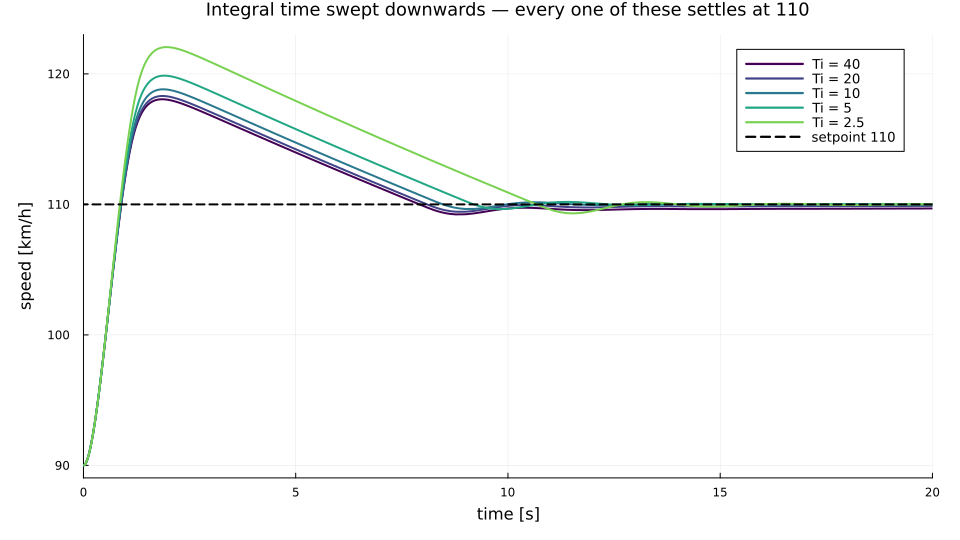
Next: a third path, to arrive without overshooting. → 05, PID
Notebook 05
Three terms, three jobs: present, past, future.
notebooks/lecture01/05-pid.ipynb
$$ u \;=\; k\left(e \;+\; \frac{1}{T_i}\int_0^t e\,d\tau \;+\; T_d\,\frac{de}{dt}\right) $$
Proportional. How far off am I now?
Integral. How long have I been off?
Derivative. How fast am I closing?
$$ u \;=\; K_p\,e \;+\; K_i\!\int_0^t\! e\,d\tau \;+\; K_d\,\frac{de}{dt} $$
What the course slides show, and what most code and most textbooks use.
$$ u \;=\; k\left(e + \frac{1}{T_i}\!\int_0^t\! e\,d\tau + T_d\,\frac{de}{dt}\right) $$
What LimPID takes, and what this lecture uses
throughout.
| From standard to parallel | and back |
|---|---|
| $K_p = k$ | $k = K_p$ |
| $K_i = k/T_i$ | $T_i = K_p/K_i$ |
| $K_d = k\,T_d$ | $T_d = K_d/K_p$ |
$$ C(s) \;=\; k\left(1 + \frac{1}{T_i s} + T_d s\right) \;=\; \underbrace{k}_{\text{gain}}\; \frac{\overbrace{T_i T_d\,s^2 + T_i\,s + 1}^{\text{two zeros}}} {\underbrace{T_i\,s}_{\text{a pole at the origin}}} $$
A real controller has one more pole, from the filter on the derivative — section 07's $N_d$.
controller(; with_I, with_D) = Scenarios.CruiseLoopStep(;
name = :CruiseLoopStep, with_I = with_I, with_D = with_D)
p_only = Scenarios.CruiseLoopTransient(
k = GAIN, T_max = UNLIMITED, y_max = UNLIMITED, stop = 60.0)
pi_loop = Scenarios.CruiseLoopTransient(
model = controller(with_I = true, with_D = false),
k = GAIN, Ti = T_I, T_max = UNLIMITED, y_max = UNLIMITED, stop = 60.0)
pid_loop = rerun(
Scenarios.CruiseLoopTransient(
model = controller(with_I = true, with_D = true),
k = GAIN, Ti = T_I, Td = T_D, wd = 0.0,
T_max = UNLIMITED, y_max = UNLIMITED, stop = 60.0),
"loop.controller.xd0" => -V_START)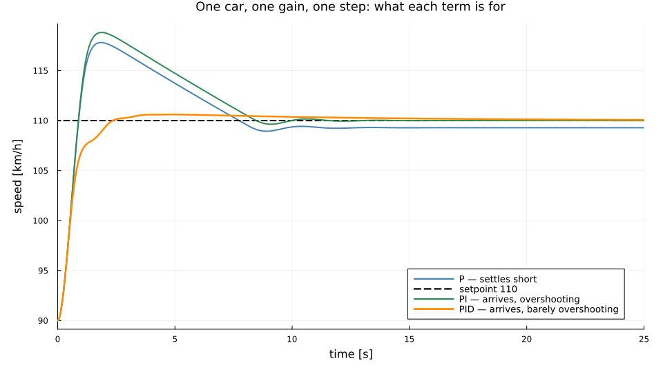
# each path's state, scaled by k so every trace is in N.m
contribution(run, path) = (signal(run, path)[1],
GAIN .* signal(run, path)[2])
t_p, u_p = contribution(pid_loop, "loop.controller.proportional.y")
t_i, u_i = contribution(pid_loop, "loop.controller.integrator.y")
t_d, u_d = contribution(pid_loop, "loop.controller.derivative.y")
t_u, u_cmd = signal(pid_loop, "loop.controller.y")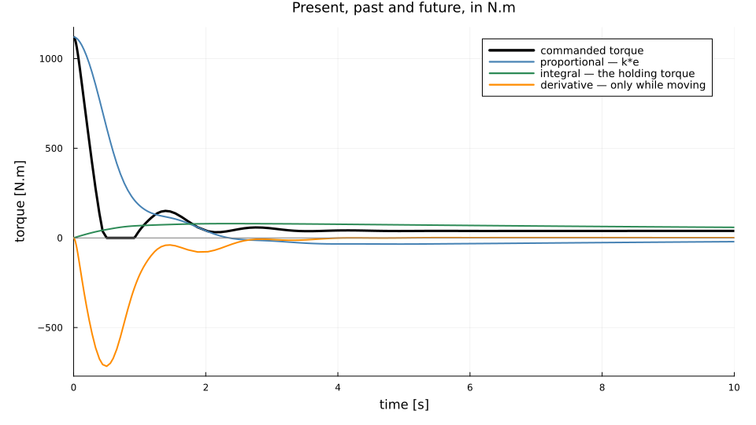
TDS = [0.1, 0.25, 0.5, 1.0, 2.0, 4.0]
td_family = sweep(pid_loop, "Td", TDS)
plot_sweep(td_family; sig = SPEED, setpoint = 110, name = "Td",
xlims = (0, 40))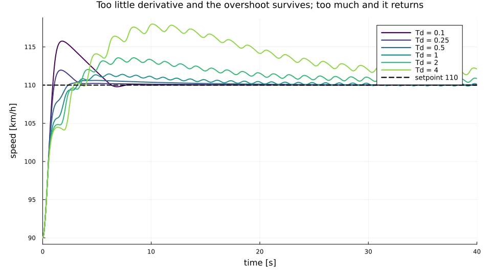
Set a gain to zero and that path disappears. What is left gets named after the letters that remain:
| Controller | Paths | In our model |
|---|---|---|
| P | present | with_I = false, with_D = false |
| PI | present, past | with_I = true, with_D = false |
| PD | present, future | with_I = false, with_D = true |
| PID | all three | with_I = true, with_D = true |
dyad/Lecture1/CruiseLoop.dyad
Next: the engine runs out of torque, and the integrator does not notice. → 06, integral windup
Notebook 06
The integrator does not know the engine has run out.
notebooks/lecture01/06-windup.ipynb
Real actuators have backlash, rate limits and saturation. A linear model has none of these: ask it for a million newton-metres and it will agree.
dyad/Vehicle/IdealEngine.dyad
Scenarios = VehicleSystemsComponents.Lecture1
SPEED = "loop.plant.v_kmh"
COMMAND = "loop.controller.y"
DELIVERED = "loop.plant.engine.limiter.y"
INTEGRAL = "loop.controller.integrator.y"
# `Ni` is the back-calculation tracking factor; a large value makes the
# correction negligible, which is the no-anti-windup case.
none = Scenarios.CruiseClimbTransient(
k = 56.0, Ti = 8.0, Ni = 1.0e6,
v_set = 130.0, gradient = 0.10,
start_time = 30.0, duration = 120.0, stop = 400.0)
plot_speed(none; sig = SPEED, setpoint = 130)
plot_torque(none; commanded = COMMAND, delivered = DELIVERED)
signal(none, INTEGRAL) # the integrator, separatelydyad/Lecture1/WindupClimb.dyad
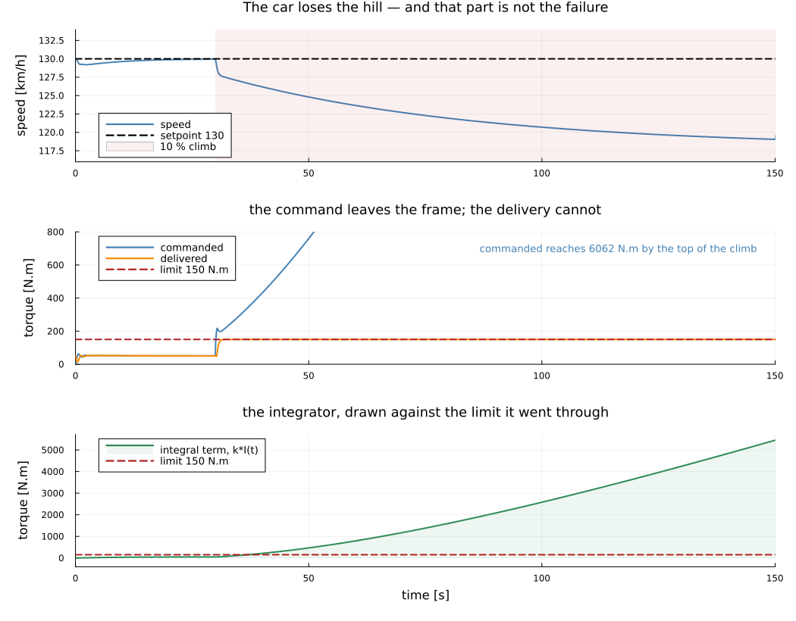
When the road flattens at t = 150 s, the car accelerates. The error changes sign. The integrator begins to unwind.
But it is unwinding from far above the limit. While the command falls from 400 N·m to 150, the engine delivers the same full torque it was delivering before.
Nothing the car does can be seen at the output until the command comes back inside the limit.
plt = plot_speed(none; sig = SPEED, setpoint = 130)
vline!(plt, [30.0, 150.0]; ls = :dot, color = :gray,
label = "climb starts / ends")
@show overshoot(none, 130; sig = SPEED, y0 = 130) # percent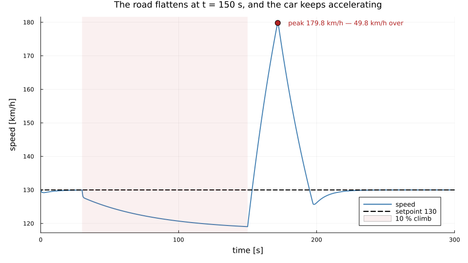
Both true → stop integrating. Either one false → the integrator is restored and starts coming down immediately.
Instead of switching the integrator off, feed the part of the command that did not get through back into it:
$$ \dot{I} \;=\; \frac{k}{T_i}\,e \;+\; \frac{1}{T_t}\bigl(u_{sat} - u\bigr) \qquad T_t = N_i\,T_i $$
| Clamping | Back-calculation | |
|---|---|---|
| Action | on / off | continuous |
| Tuning | none | $N_i$ — how fast it unwinds |
| Reads | trivially | needs a second look |
In LimPID | the variant built for task 4 | built in, via Ni |
Both keep the integrator near the limit rather than far above it, which is the only thing that matters.
dyad/Lecture1/CruiseLoop.dyad
# Three schemes, three calls: `Ni` switches back-calculation on and off,
# and clamping is a different controller, so a different analysis.
CLIMB = (k = 56.0, Ti = 8.0, v_set = 130.0, gradient = 0.10,
start_time = 30.0, duration = 120.0, stop = 400.0)
runs = ["none" => Scenarios.CruiseClimbTransient(; Ni = 1.0e6, CLIMB...),
"back-calculation" => Scenarios.CruiseClimbTransient(; Ni = 0.9, CLIMB...),
"clamping" => Scenarios.ClampingCruiseClimbTransient(; CLIMB...)]
[name => overshoot(s, 130; sig = SPEED, y0 = 130) for (name, s) in runs]| Variant | Peak overshoot |
|---|---|
| none | read from the notebook |
| clamping | read from the notebook |
| back-calculation | read from the notebook |
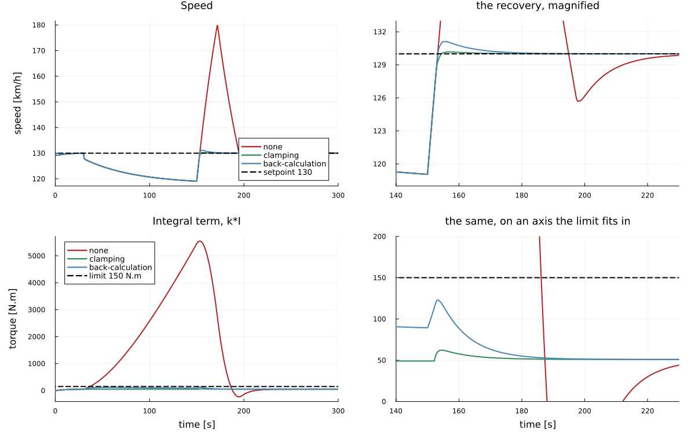
The clamping limit is a number you choose in the controller. It should not be the engine's nameplate figure.
Clamp at exactly 150 N·m and on a hot day the real limit is 140 — so the loop saturates ten newton-metres below where the anti-windup starts working, and it winds up anyway.
Next: the numbers that tell you where to start. → 08, tuning (or 07, derivative and noise if there is time)
Notebook 07
The derivative does not care how big the noise is, only how fast.
notebooks/lecture01/07-derivative-and-noise.ipynb
Thermal, shot, flicker, coupling from everything else in the vehicle — noise is not a defect, it is a property. A speedometer has it too.
sol = solve(ODEProblem(mtkcompile(
cruise_noisy(k = 56.0, Ti = 8.0, Td = 1.5, Nd = 10.0)),
[], tspan))
t, v_true = signal(sol, "plant.v_kmh")
t, v_meas = signal(sol, "noise.y")
plot(t, [v_true v_meas]; lw = 2,
label = ["true" "measured"])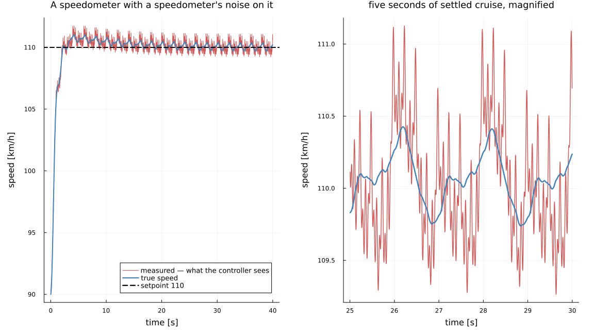
$$ \frac{d}{dt}\bigl[A\sin(\omega t)\bigr] \;=\; A\,\omega\cos(\omega t) $$
A derivative reports slope. It does not know or care that the wiggle is small — it only sees how fast it moves.
Above ω = 1 rad/s the derivative amplifies. High frequencies are exactly where sensor noise lives.
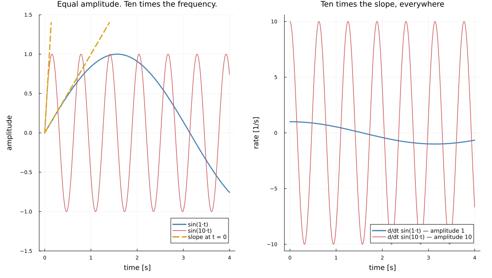
# Nd is the derivative filter coefficient: large Nd
# pushes the cutoff up, towards no filter at all
sol = solve(ODEProblem(mtkcompile(
cruise_noisy(k = 56.0, Ti = 8.0, Td = 1.5, Nd = 1000.0)),
[], tspan))
plot_torque(sol; delivered = nothing)
extrema(signal(sol, TORQUE_CMD)[2]) # the damage, in N.m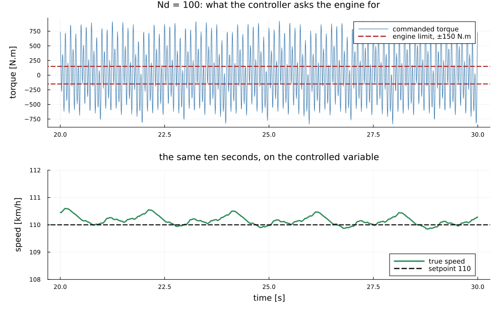
A first-order low-pass on the derivative path, with cutoff N in rad/s:
$$ \frac{s\,N}{s+N} \qquad\text{instead of}\qquad s $$
sw = sweep(cruise_noisy(k = 56.0, Ti = 8.0, Td = 1.5),
"Nd", [1000.0, 100.0, 20.0, 5.0];
tspan = (0.0, 120.0))
plot_sweep(sw; sig = TORQUE_CMD, name = "Nd")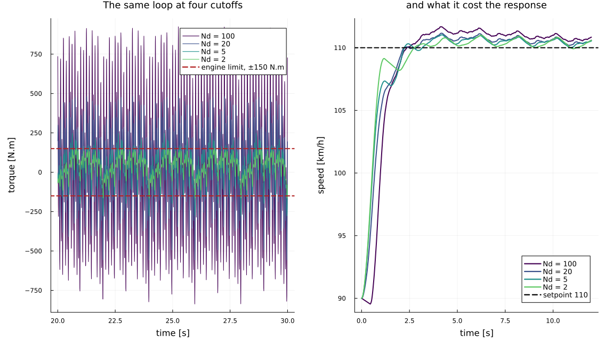
Low enough to remove the noise.
High enough to leave the signal.
If those two ranges overlap, no first-order filter will save you and you need a different measurement — a better sensor, or a state estimator that uses a model to tell signal from noise.
Nd parameter exists.Next: the tire has a limit too, and it is not in the engine. → 10, wheel and slip
Notebook 08
You can compute a starting gain set from a single step test, without a model.
notebooks/lecture01/08-tuning.ipynb
Not well behaved means: strongly nonlinear, or unstable and you are trying to stabilize it, or a lot of delay, or non-minimum phase. Those need more than PID, or at least more than these methods.
| You have | You can |
|---|---|
| hardware only | guess and check; or a step test and a heuristic table |
| a model | pole placement, loop shaping, autotuning — or the same tables, safely |
We have a model, and we will deliberately use the hardware methods on it — because those are the ones that transfer to a car.
$$ G(s) \;=\; \frac{K\,e^{-\theta s}}{\tau s + 1} \qquad\text{first order plus dead time}$$
| is | here | |
|---|---|---|
| $K$ | steady-state gain — output change per unit of input change | km/h per N·m |
| $\tau$ | time constant — time to cover 63 % of the change | s |
| $\theta$ | dead time — how long nothing happens first | s |
Three numbers. Not a model of a car — a model of a shape, and a great many industrial plants have that shape.
$$ r \;=\; \theta/\tau $$
| $\theta/\tau$ | character |
|---|---|
| < 0.1 | easy — high gains are available, PI is usually enough |
| 0.1 – 1 | ordinary — what the tables were fitted for |
| > 1 | dead-time dominated — PID struggles; you want a predictor |
# 1. settle 2. step 3. record 4. scale by the step size
Scenarios = VehicleSystemsComponents.Lecture1
V_START, SETPOINT, T_STEP = 90.0, 110.0, 50.0
A_STEP = cruise_torque(SETPOINT) - cruise_torque(V_START)
step_test = Scenarios.CarStepTestTransient(
tau_lo = cruise_torque(V_START), tau_hi = cruise_torque(SETPOINT),
v0 = V_START / 3.6, t_step = T_STEP)
K, tau, theta = fopdt_fit(step_test;
output = "plant.v_kmh", A = A_STEP, t0 = T_STEP)
@show K tau theta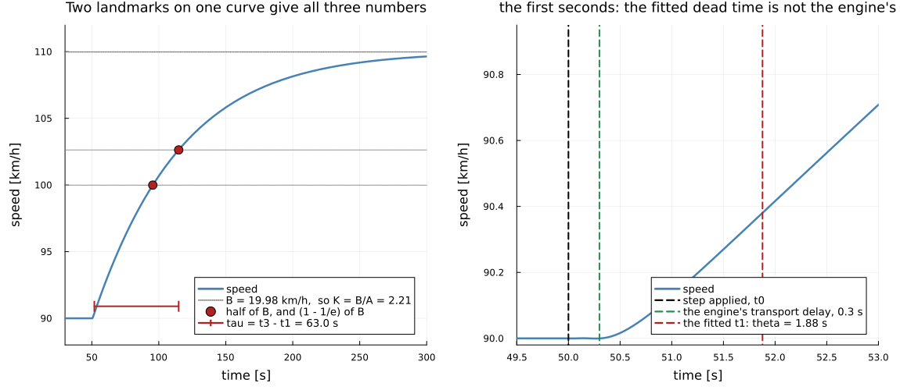
$$ t_1 = \frac{t_2 - \ln 2\,\cdot t_3}{1 - \ln 2} \qquad K = \frac{B}{A} \qquad \tau = t_3 - t_1 \qquad \theta = t_1 - t_0 $$
Use the exact constants, not rounded ones — t₁ magnifies any error
in the two landmarks by about 2.3 time constants. fopdt_fit in
support.jl is this construction.
| with $r = \theta/\tau$ | $k$ | $T_i$ | $T_d$ |
|---|---|---|---|
| P | $\dfrac{1}{K}\dfrac{\tau}{\theta}\left(1 + \dfrac{r}{3}\right)$ | — | — |
| PI | $\dfrac{1}{K}\dfrac{\tau}{\theta}\left(0.9 + \dfrac{r}{12}\right)$ | $\theta\,\dfrac{30 + 3r}{9 + 20r}$ | — |
| PID | $\dfrac{1}{K}\dfrac{\tau}{\theta}\left(\dfrac{4}{3} + \dfrac{r}{4}\right)$ | $\theta\,\dfrac{32 + 6r}{13 + 8r}$ | $\theta\,\dfrac{4}{11 + 2r}$ |
SPEED = "loop.plant.v_kmh"
UNLIMITED = 1.0e6 # N.m — the ceiling lifted away
k_cc, Ti_cc, Td_cc = cohen_coon(K, tau, theta)
# `with_I` and `with_D` are structural, so a PID is a different compiled
# model rather than the same one with gains set.
pid = Scenarios.CruiseLoopTransient(
model = Scenarios.CruiseLoopStep(; name = :CruiseLoopStep,
with_I = true, with_D = true),
k = k_cc, Ti = Ti_cc, Td = Td_cc, wd = 0.0,
T_max = UNLIMITED, y_max = UNLIMITED, stop = 60.0)
plot_speed(pid; sig = SPEED, setpoint = 110)The tables are transcribed in
test/tuning_tables.jl, with every coefficient checked against
materials/ControlTheory/tuning_methods.pdf by hand.
# Raise k under pure proportional control until the oscillation neither
# grows nor decays. `CruiseLoopStep` leaves both switches off, so the
# plain analysis is already the P-only loop this step needs.
DELTA = 0.1 # km/h — the smallest poke that still measures cleanly
probe = Scenarios.CruiseLoopTransient(
k = 100.0, v_lo = V_START, v_hi = V_START + DELTA,
T_max = UNLIMITED, y_max = UNLIMITED, stop = 30.0)
ladder = sweep(probe, "k", [80.0, 100.0, 110.0, 114.0, 115.0, 125.0])
plot_sweep(ladder; sig = SPEED, name = "k")
Ku = ... # the gain at which it sustains
Pu = ... # the period of that oscillation, seconds
k_zn, Ti_zn, Td_zn = ziegler_nichols(Ku, Pu)Two numbers come out of this experiment, and two tuning tables consume them — the next two slides.
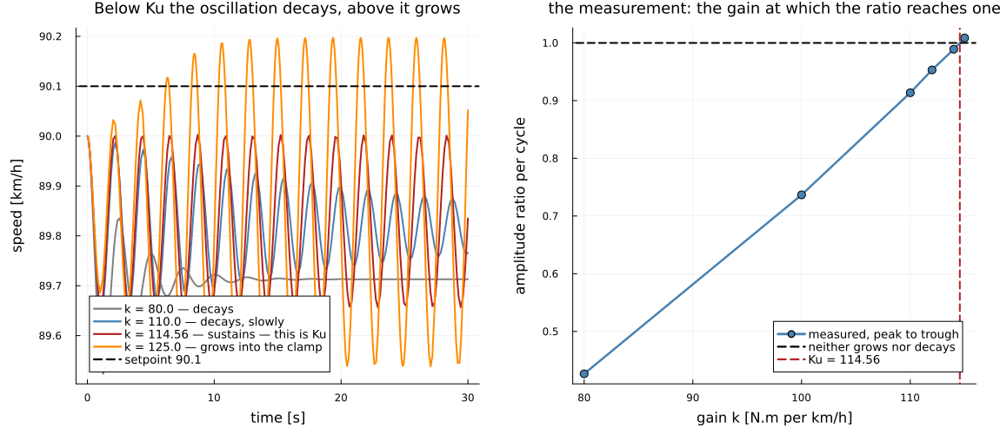
| from $K_u$ and $P_u$ | $k$ | $T_i$ | $T_d$ |
|---|---|---|---|
| P | $K_u/2$ | — | — |
| PI | $K_u/2.2$ | $P_u/1.2$ | — |
| PID | $K_u/1.7$ | $P_u/2$ | $P_u/8$ |
$T_i = 4\,T_d$ in every ZN row, whatever $P_u$ is — the two zeros are always placed in the same ratio.
| same $K_u$, $P_u$ | $k$ | $T_i$ | $T_d$ |
|---|---|---|---|
| PI | $K_u/3.2$ | $2.2\,P_u$ | — |
| PID | $K_u/2.2$ | $2.2\,P_u$ | $P_u/6.3$ |
k_tl, Ti_tl, Td_tl = tyreus_luyben(Ku, Pu) # same Ku, Pu| PID row | $k$ | $T_i$ | $T_d$ |
|---|---|---|---|
| Ziegler-Nichols | $K_u/1.7$ | $P_u/2$ | $P_u/8$ |
| Tyreus-Luyben | $K_u/2.2$ | $2.2\,P_u$ | $P_u/6.3$ |
Three quarters of the gain, and an integrator 4.4 times slower — $2.2P_u$ against $P_u/2$. Same two measured numbers.
$$ K_u \;=\; \frac{4d}{\pi a} $$
Then feed $K_u$ and $P_u$ into either of the last two tables.
The formula is the describing-function approximation of the relay: it takes the first harmonic of a square wave of amplitude $d$, which has amplitude $4d/\pi$.
gains = ["Cohen-Coon" => (k_cc, Ti_cc, Td_cc),
"Ziegler-Nichols" => (k_zn, Ti_zn, Td_zn),
"Tyreus-Luyben" => (k_tl, Ti_tl, Td_tl)]
# One compiled model for all three: `rerun` swaps the gains in the problem
# the compiler already built.
tuned(k, Ti, Td) = rerun(pid, "k" => k, "Ti" => Ti, "Td" => Td,
"loop.controller.xd0" => -V_START)
plt = plot(; xlabel = "time [s]", ylabel = "speed [km/h]")
for (name, (k, Ti, Td)) in gains
plot!(plt, signal(tuned(k, Ti, Td), SPEED)...; lw = 2, label = name)
end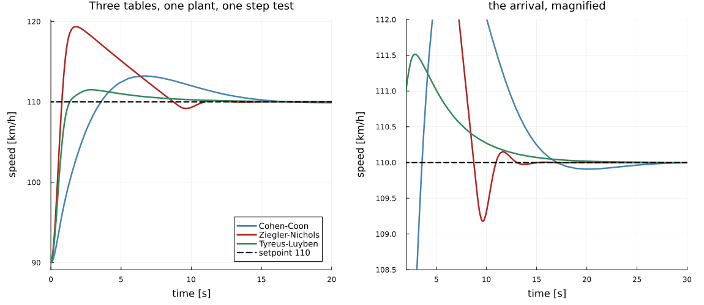
| Method | Experiment | Measures | Risk to the plant | Tends to give |
|---|---|---|---|---|
| Guess and check | any | your patience | whatever you do to it | an intuition for the knobs |
| Cohen-Coon | open-loop step | $K$, $\tau$, $\theta$ | none — never leaves the stable region | quick, oscillatory |
| Ziegler-Nichols | closed loop, P only | $K_u$, $P_u$ | drives it to the edge of instability | aggressive, quarter-decay |
| Tyreus-Luyben | the same experiment | $K_u$, $P_u$ | the same | conservative, sluggish |
| Relay autotune | closed loop, relay | $d$, $a$, $P_u$ | bounded by the $d$ you chose | $K_u$ safely, then a table |
This is why Cohen-Coon exists. An open-loop step test never leaves the stable region.
# push the gains until the response looks superb
hot = tuned(8 * k_zn, Ti_zn / 2, Td_zn)
plot_speed(hot; sig = SPEED, setpoint = 110) # looks perfect
plot_torque(hot; commanded = "loop.controller.y",
delivered = "loop.plant.engine.limiter.y")dyad/Lecture1/CruiseLoop.dyad
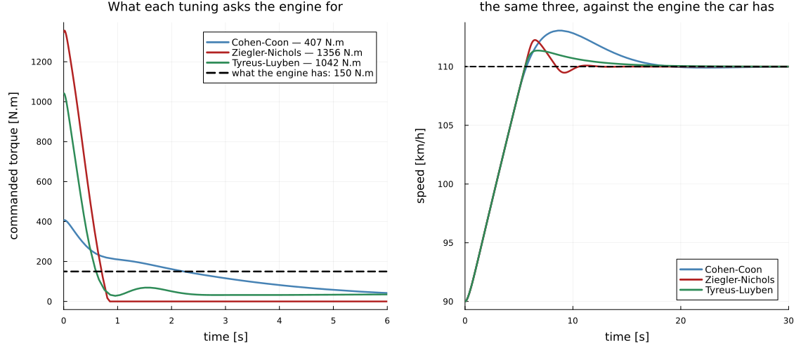
Next: the same controller, running on a computer that only looks occasionally. → 09, discretization
Notebook 09
The same controller gets worse purely because it looks less often.
notebooks/lecture01/09-discretization.ipynb
Every sample period, in order:
You have to walk a winding corridor.
# the gains from section 08, untouched
Scenarios = VehicleSystemsComponents.Lecture1
SPEED = "loop.plant.v_kmh"
UNLIMITED = 1.0e6
# `Ts` is structural — the Pade delay bakes its delay time in at
# construction — so a sample-time sweep is one compiled model per value,
# not `sweep` over one of them.
sampled(Ts) = Scenarios.SampledCruiseStep(;
name = :SampledCruiseStep, Ts = Ts, with_I = true, with_D = true,
k = k_zn, Ti = Ti_zn, Td = Td_zn, wd = 0.0,
T_max = UNLIMITED, y_max = UNLIMITED)
runs = [Ts => solve(ODEProblem(mtkcompile(sampled(Ts)), [], (0.0, 120.0)))
for Ts in [0.01, 0.1, 0.4, 1.0]]
plt = plot(; xlabel = "time [s]", ylabel = "speed [km/h]")
for (Ts, sol) in runs
plot!(plt, signal(sol, SPEED)...; lw = 2, label = "Ts = $Ts s")
endOvershoot grows. Then the loop rings. Then it does not come back.
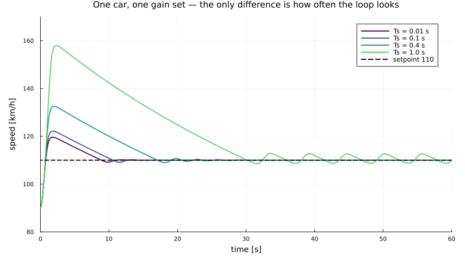
A zero-order hold delays the average command by about half a sample period, so at frequency $\omega$ it costs
$$ \Delta\varphi \;\approx\; -\,\frac{\omega\,T_s}{2} \ \text{rad} $$
Phase margin is a finite budget that your tuning already spent most of.
# 1. sample faster — same gains, Ts back down
# 2. re-tune for the rate you actually have
k2, Ti2, Td2 = ziegler_nichols(Ku_slow, Pu_slow)
retuned(Ts, k, Ti, Td) = solve(ODEProblem(mtkcompile(
Scenarios.SampledCruiseStep(; name = :SampledCruiseStep, Ts = Ts,
with_I = true, with_D = true, k = k, Ti = Ti, Td = Td, wd = 0.0,
T_max = UNLIMITED, y_max = UNLIMITED)), [], (0.0, 120.0)))
sol_slow = retuned(1.0, k_zn, Ti_zn, Td_zn)
sol_retun = retuned(1.0, k2, Ti2, Td2)Re-tuning buys back stability, not performance. The slow loop is a slower loop, permanently.
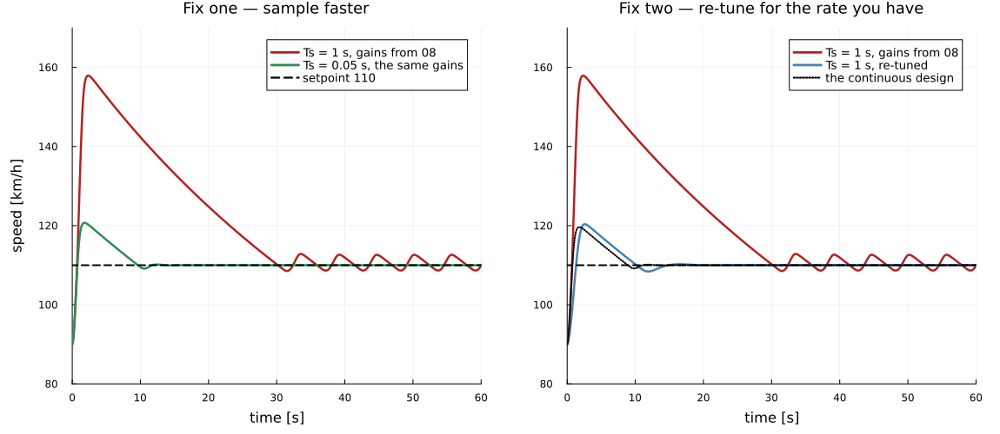
Design continuous. Convert. Then verify that the rate you actually have held up — which is the plot we just made.
Next: the tire is an actuator too. → 10, wheel and slip
Notebook 10
The tire is an actuator too, and it saturates — which makes cruise control dangerous on ice.
notebooks/lecture01/10-wheel-and-slip.ipynb
# same gains as section 05, now with wheel inertia
# and an ideal rolling contact
sol_l1 = solve(ODEProblem(mtkcompile(
wheeled_cruise_loop(k = 56.0, Ti = 8.0, Td = 1.5)),
[], tspan))
plot_speed(sol_l1; setpoint = 110)
@show rise_time(sol_l1, 110) overshoot(sol_l1, 110)A rotating wheel is extra inertia the engine has to accelerate, so the plant is slightly heavier than it was. The gains should survive.
That the contact patch never slides.
Every plot in this lecture up to this slide has quietly assumed it. Wheel speed times radius is road speed, by definition, with no way for them to disagree.
# the friction curve's second derivative is discontinuous
# at the transitions: explicit RK handles it, BDF struggles
sol = solve(ODEProblem(mtkcompile(
standing_start(mu_scale = 0.2, tau_cmd = CAR.T_max)),
[], (0.0, 20.0)), Tsit5())
plot(signal(sol, "wheel.v_wheel_kmh")...; lw = 2, label = "wheel")
plot!(signal(sol, "v_kmh")...; lw = 2, label = "car")Under closed loop the error stays large, so the integrator winds up — against a limit that is not in the engine at all.
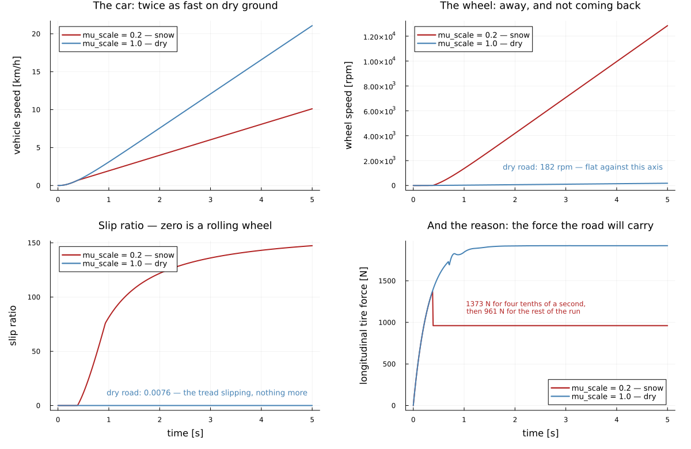
$$ \kappa \;=\; \frac{\omega r - v}{\max(|v|,\ \varepsilon)} \qquad F_x \;=\; \mu(\kappa)\,F_z $$
plot(kappas, mu.(kappas); lw = 2, label = "",
xlabel = "slip ratio", ylabel = "mu")
scatter!([kappa_peak], [mu_peak]; label = "peak")
# where the wheelspin run actually sat
scatter!(operating_points(sol); label = "during wheelspin")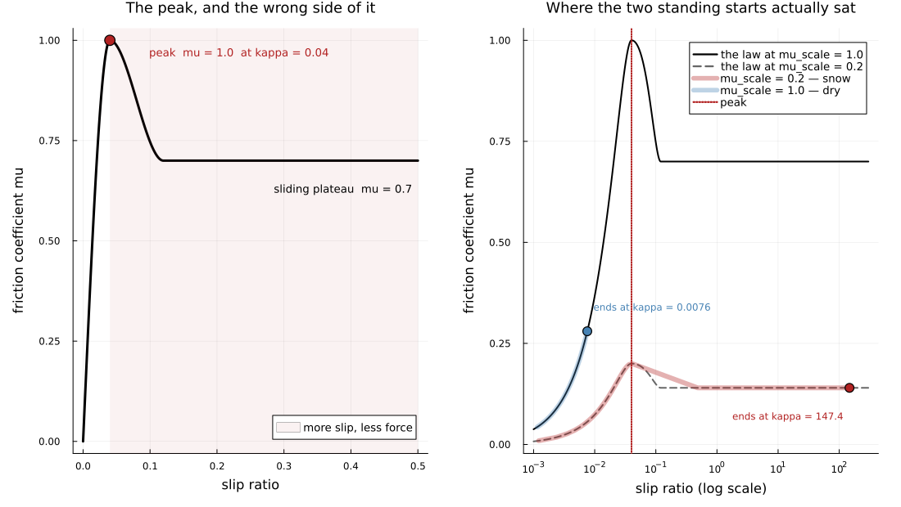
More slip → less force → more slip.
That is a positive feedback loop, and it is inside the plant. Nobody wired it; it is what the tire does.
In that region the plant is open-loop unstable.
# cruising at 90 km/h; friction collapses for two seconds
sol = solve(ODEProblem(mtkcompile(
ice_patch(k = 56.0, Ti = 8.0, v_set = 90.0,
mu_low = 0.15, t_ice = (40.0, 42.0))),
[], (0.0, 90.0)), Tsit5())
# speed, wheel speed, slip ratio, commanded torque,
# on shared time axes with the patch shaded
plot_ice_patch(sol)The controller reads falling speed, commands more torque, spins the driven wheel — and destroys the traction it was trying to use.
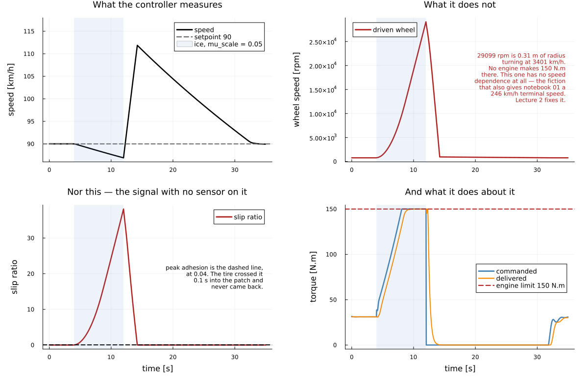
# the same run, with a friction-aware torque limit
sol_tc = solve(ODEProblem(mtkcompile(
ice_patch(k = 56.0, Ti = 8.0, v_set = 90.0,
mu_low = 0.15, t_ice = (40.0, 42.0),
traction_limit = true)),
[], (0.0, 90.0)), Tsit5())The car still loses speed on the ice — physics is physics. It does not lose the wheel.
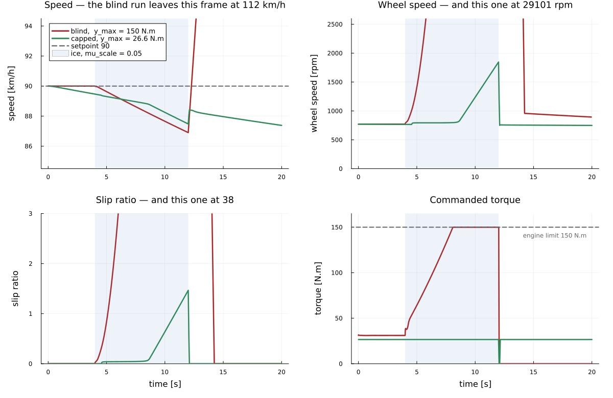
Real cruise control disengages when traction control intervenes. Now you know exactly why — the two loops are fighting over the same actuator, and the speed loop is the one with the worse information.
The fix is an inner loop regulating slip inside an outer loop regulating speed. The inner one is fast and local; the outer one is slow and comfortable.
That is cascade control.
Which is where lecture 2 begins.
Every notebook is in the repository, executed, with its plots. Re-run them.